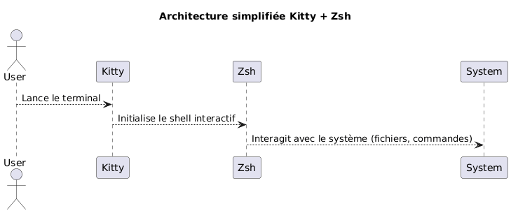
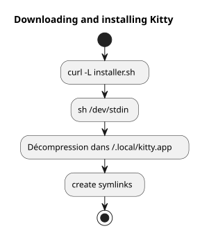
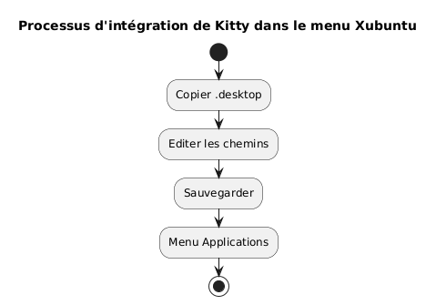
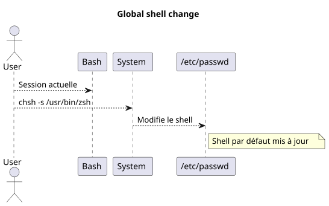
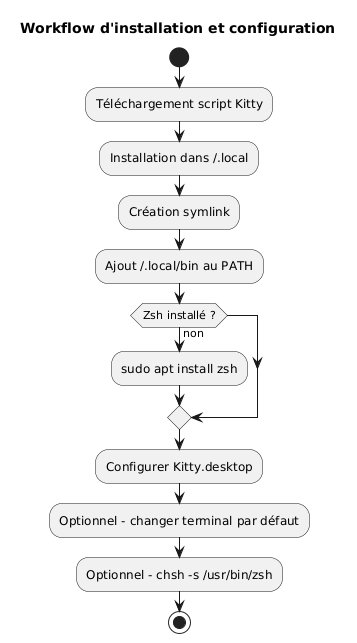
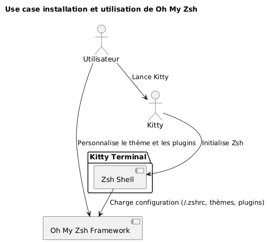
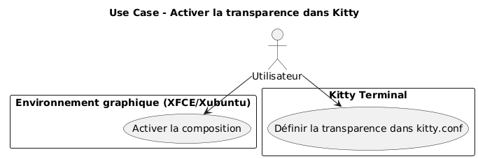
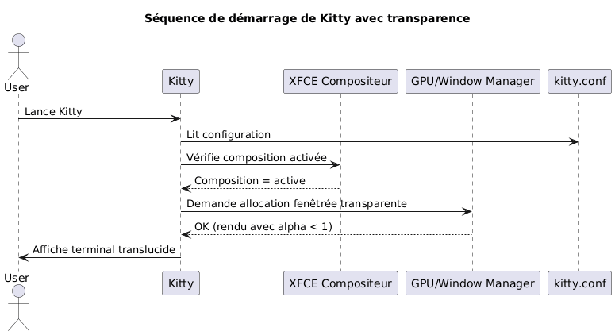

Install Kitty terminal and configure Zsh as the default shell under Xubuntu
Published on 07 May 2026 Updated on 2026-05-07
- Why choose Kitty and Zsh?
- System Prerequisites
- Downloading and Installing Kitty
- Integrating Kitty into Xubuntu
- Installing Zsh
- Set Zsh as the default shell
- Zsh Configuration (optional)
- Complete Workflow Summary
- Final Verification
- Installation and Configuration of Oh My Zsh
- Enabling Translucency in Kitty
- Disabling the Audible Bell
- Updating Kitty
- References
- Conclusion
This guide explains step-by-step how to install the kitty terminal on Xubuntu, configure it correctly, and replace bash with zsh as the default shell. The kitty project is available here: https://github.com/kovidgoyal/kitty.
_ Kitty is a modern, fast, and configurable terminal, particularly suited for demanding developers. _
Why choose Kitty and Zsh?
Kitty stands out due to:
-
Superior performance thanks to GPU acceleration,
-
A configuration entirely based on a single text file,
-
Excellent support for fonts and ligatures.
Zsh, for its part, is a powerful interactive shell offering:
-
Intelligent completion,
-
A customizable prompt,
-
High compatibility with bash.
By combining Kitty and Zsh, you benefit from a productive and aesthetic environment.

|
This guide is intentionally limited to installation via script and to Xubuntu. |
System Prerequisites
Before starting, ensure you have:
-
Xubuntu installed,
-
internet access,
-
a functional bash shell to run the script.
Check your environment:
uname -a
lsb_release -aDownloading and Installing Kitty
Kitty recommends installing it via an official script that places the files in`~/.local/kitty.app`.
|
This method is independent of package managers (no`apt`). |
Download the installation script
Run the following command:
curl -L https://sw.kovidgoyal.net/kitty/installer.sh | sh /dev/stdinThis command performs:
-
binary download,
-
extraction into`~/.local/kitty.app`,
-
creation of symbolic links.

Creating Symbolic Links
In order to be able to invoke`kitty`from the terminal, create a symbolic link:
ln -s ~/.local/kitty.app/bin/kitty ~/.local/bin/kittyAdd`~/.local/bin`to your PATH if not already done:
echo 'export PATH="$HOME/.local/bin:$PATH"' >> ~/.zshrc
source ~/.zshrcYou can verify the installation:
kitty --versionIntegrating Kitty into Xubuntu
For Kitty to appear in the applications menu:
Copy the desktop file
Copy the provided`.desktop`file:
cp ~/.local/kitty.app/share/applications/kitty.desktop ~/.local/share/applications/Modify the desktop file
Edit the file:
nano ~/.local/share/applications/kitty.desktopCheck or modify the following lines:
[Desktop Entry]
Version=1.0
Type=Application
Name=Kitty Terminal
Comment=Fast GPU-based terminal emulator
Exec=/home/$USER/.local/kitty.app/bin/kitty
Icon=kitty
Categories=System;TerminalEmulator;Replace`YOURUSER`with your username.

Set Kitty as the default terminal (optional)
To make Kitty the default terminal launched:
sudo update-alternatives --install /usr/bin/x-terminal-emulator x-terminal-emulator ~/.local/kitty.app/bin/kitty 50
sudo update-alternatives --config x-terminal-emulatorSelect`kitty`in the proposed menu.
Installing Zsh
If Zsh is not yet installed, run:
sudo apt install zshVerify the installation:
zsh --versionSet Zsh as the default shell
You can change your shell globally or only within Kitty.
Global Method (for all terminals)
Identify the absolute path:
which zshGenerally`/usr/bin/zsh`.
Modify the default shell:
chsh -s /usr/bin/zshLog out and log back in.

Kitty-specific Method
If you prefer to only change the shell in Kitty, edit the configuration file:
nano ~/.config/kitty/kitty.confAdd this line:
shell zshSave and restart Kitty.
Zsh Configuration (optional)
To customize your Zsh:
Create a .zshrc file
touch ~/.zshrc
nano ~/.zshrcExample of a minimal configuration
export ZSH_THEME="robbyrussell"
export PATH="$HOME/.local/bin:$PATH"
alias ll="ls -la"Complete Workflow Summary
The diagram below summarizes the entire process:

Final Verification
Launch Kitty:
kittyYou should see that`zsh`is active:
echo $SHELLExpected result:
/usr/bin/zsh
To change the font size inKitty, you must adjust the`font_size`parameter in the configuration file. Here is the detailed procedure:
📂 Open the configuration file
The main configuration file is usually located in:
~/.config/kitty/kitty.confIf this file does not exist yet, you can create it. Example:
nano ~/.config/kitty/kitty.conf🖋️ Add or modify font_size
Add the following directive, or modify it if it already exists:
font_size 14.0Here`14.0`corresponds to the desired size. You can use any decimal value, for example`12.0`, 15.5, etc.
💾 Save and relaunch Kitty
-
Save (
Ctrl + O, then`Entrée`) and quit (Ctrl + X) if you are using`nano`. -
Close all Kitty windows, then relaunch the terminal for the change to take effect.
✅ Dynamic Adjustment (Temporary Zoom)
If you wish to zoom in/out temporarily without modifying the configuration, use the default keyboard shortcuts:
-
Increase font size:
Ctrl + Shift + =
-
Decrease font size:
Ctrl + Shift + -
-
Reset size:
Ctrl + Shift + Backspace
These settings do not persist after closing the terminal.
Installation and Configuration of Oh My Zsh
Once Zsh is installed and configured as the default shell, you can enrich your environment with Oh My Zsh, a Zsh configuration management framework, offering:
-
a collection of themes for the prompt,
-
numerous plugins,
-
a clear organization of the configuration.
Installing Oh My Zsh
Ensure that Zsh is active:
zsh --versionIf necessary, run:
zshThen download and run the official installation script:
sh -c "$(curl -fsSL https://raw.githubusercontent.com/ohmyzsh/ohmyzsh/master/tools/install.sh)"This script:
-
creates the`~/.oh-my-zsh`,
-
folder, optionally backs up your`~/.zshrc`,
-
file, and automatically activates the new prompt.
Changing the Theme
Open your configuration file:
nano ~/.zshrcModify the`ZSH_THEME`variable to choose another theme (for example`agnoster`):
ZSH_THEME="agnoster"
Save and then reload the configuration:
source ~/.zshrcVerification
Launch Kitty and verify that the prompt has indeed changed. You can confirm that Oh My Zsh is active by running:
echo $ZSHThe result should be similar to:
/home/your_user/.oh-my-zsh
Use case diagram

Enabling Translucency in Kitty
One of the most appreciated features of Kitty is the ability to add transparency to the terminal background. This allows you to slightly see the underlying environment (window, desktop, etc.), which is particularly useful for multitasking.
Prerequisites for Transparency
Transparency in Kitty relies on thewindow compositorused by the graphical environment. Under Xubuntu (based on XFCE), ensure thatcomposition is enabled.
-
right-click on the desktop > Settings >Window Manager Tweaks,
-
tabCompositor: the "Enable display compositing" box must be checked.

Configuring Transparency in kitty.conf
Open your configuration file`~/.config/kitty/kitty.conf`:
nano ~/.config/kitty/kitty.confAdd or modify the following lines:
background_opacity 0.85This parameter accepts values between:
-
1.0→ opaque (no transparency), -
0.0→ completely transparent (unusable), -
intermediate values such as`0.90`,
0.75, etc.
A good visual compromise is generally between`0.85` et 0.95.
Restart Kitty
Close all Kitty instances, then launch a new window for the changes to take effect:
kittyPossible Additions
If you use a custom terminal background, you can also define a background color with transparency (in RGBA):
background #1e1e2effThe last component (ff) indicates the opacity (from`00` à ff).
Sequence Diagram - Kitty Initialization with Transparency

Known Limitations
|
Translucency does not work if: - the XFCE compositor is disabled, - an incompatible window manager is used, - you are using Kitty in a tmux background mode without transparency support. |
Disabling the Audible Bell
By default, Kitty emits a beep sound when an erroneous command is entered or when a terminal event triggers it. This noise can quickly become annoying, especially in an intensive development environment.
To disable this behavior, add the following directive to the`~/.config/kitty/kitty.conf`file:
audible_bell no|
You can also enable a visual bell as a replacement for the audible beep with: |
Updating Kitty
Since Kitty is installed via a script and not a package manager, the update is done by relaunching the official installation script. This allows downloading the latest version and updating your existing installation in`~/.local/kitty.app`.
|
The`.app`suffix in the`~/.local/kitty.app`path is the Kitty installation convention on Linux via its official script, and in no way indicates exclusive compatibility with macOS. |
|
Before running the update command, ensure you are in your home directory ( |
Execute the following command from your home directory:
curl -L https://sw.kovidgoyal.net/kitty/installer.sh | sh /dev/stdinThis script will:
-
Download the binaries of the new version.
-
Extract the files into`~/.local/kitty.app`.
-
Update symbolic links if necessary.
After the update, it is recommended to close all Kitty instances and relaunch them to ensure that the new version is properly taken into account.
References
If you wish to deepen your customization, consult the official documentation:
Conclusion
You now have:
-
a modern and high-performance terminal (Kitty)
-
a powerful and customizable shell (Zsh)
-
a clean configuration independent of system packages
-
an aesthetic and functional terminal equipped with Oh My Zsh